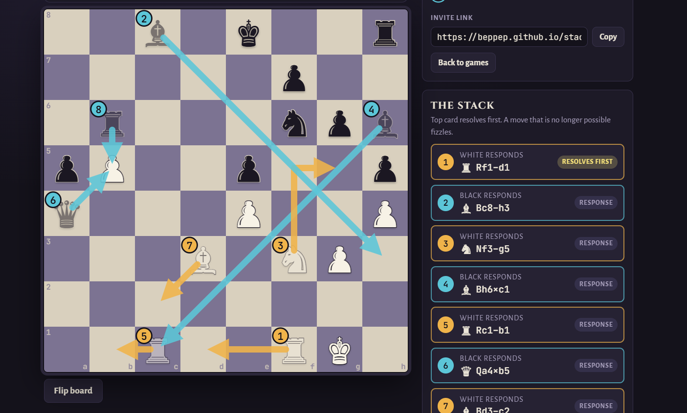
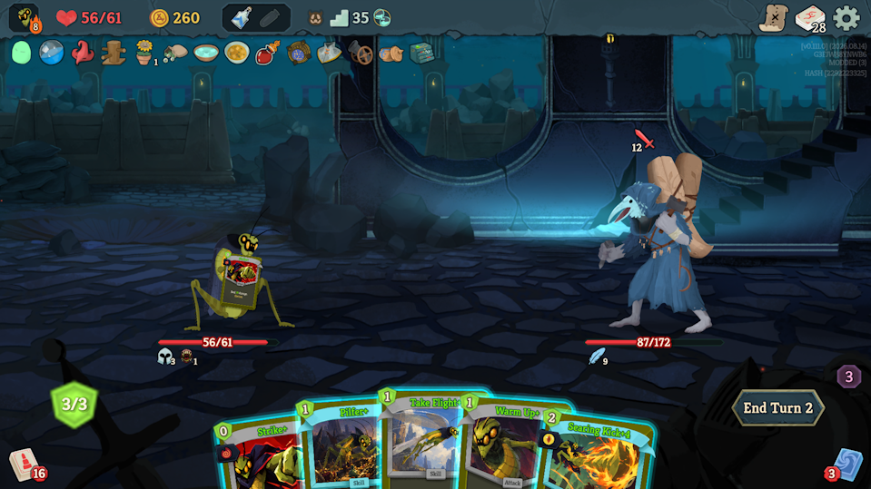

Game design
Mechanics, systems, balance and levels. I treat a design as one big optimization problem: every goal in view at once, no effort on what doesn't matter.
Game designer · Mathematician · AI-native developer
I design games, and I build them fast. A competition mathematician's problem solving, a lifetime of making games, and startup experience shipping real work with AI agents.
Open to game design and game development roles. Productive from week one, not month six.
Mechanics, systems, balance and levels. I treat a design as one big optimization problem: every goal in view at once, no effort on what doesn't matter.
I orchestrate coding agents to ship real, tested work at startup speed: game templates, agent tools, a 3D rigging pipeline, and an online server for a game I invented.
Competition math and group theory research trained me to dig until I understand what is really going on, then fix the cause, not the symptom.
Software Developer · June – September 2026 · Y Combinator startup · summerengine.com
An AI-native game engine, a fork of Godot, where agents build games from chat. I worked on the agent side: the skills, tools and harness the agents use, and the games they make.

Inventor, designer and developer
A chess variant I invented. Every move goes on a stack, and your opponent can respond before it happens. Responses resolve last-in-first-out, so you can dodge an attack, or counter a counter.
Built with Claude Code: online play with no sign-in, game clocks, replays and an AI opponent.

Slay the Spire 2 character mod · 100+ subscribers · Steam Workshop
A full new character: three new mechanics, six build-arounds and over 90 cards, plus relics, potions and dialogue. C# with Harmony patches on the decompiled game.
Designed for six goals at once: novel mechanics, pop-off potential, synergies that interweave, balance, a coherent theme, and cards that are quick to read.
Game and level designer · Nominated for Best Mobile Game, Swedish Game Awards · 4.9 stars
A game-jam idea that we took all the way to release. I built around 60 levels. We secretly control which cards the player gets, so each level teaches one new thing while still feeling like a real challenge.
More games, from a daily deduction puzzle to a combo-heavy platform fighter, at beppep.github.io.